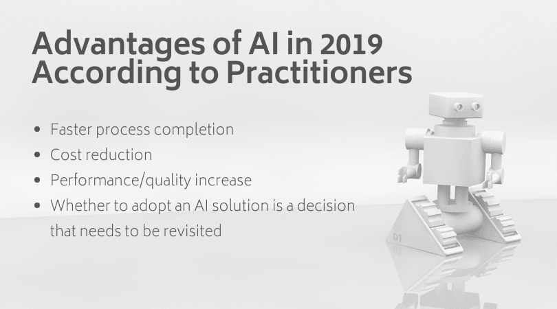
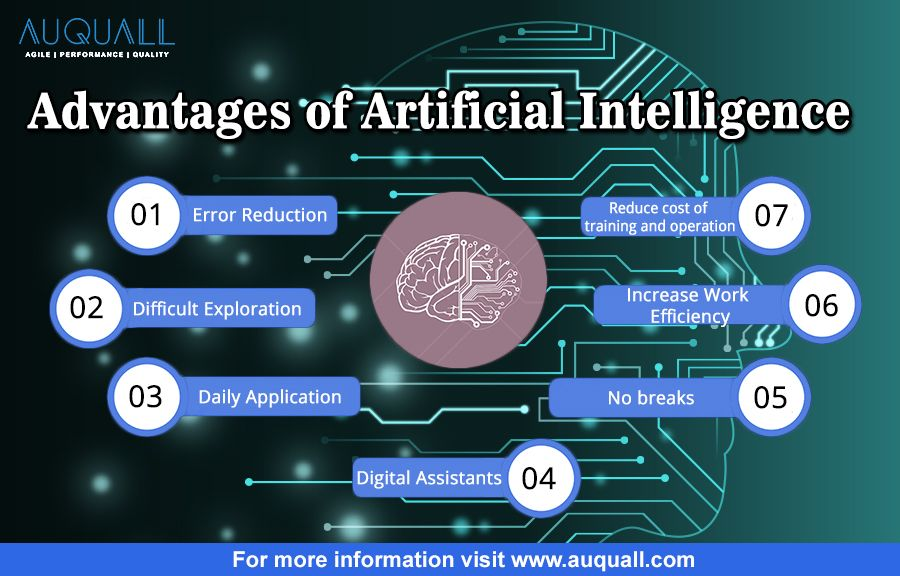

Advantages of Artificial intelligence Page
Links:
<
Advantages of Artificial Intelligence
With all the hype around AI - robots, self-driving cars, etc. - it can be easy to assume that AI doesn’t impact our everyday lives. In reality, most of us encounter AI in some way or the other almost every single day. From the moment you wake up to check your smartphone to watching another Netflix recommended movie, AI has quickly made its way into our everyday lives. According to a study by Statista, the global AI market is set to grow up to 54 percent every single year. But what exactly is AI? Will it really serve good to mankind in the future? Well, there are tons of advantages and disadvantages of AI which we’ll discuss in this article.

